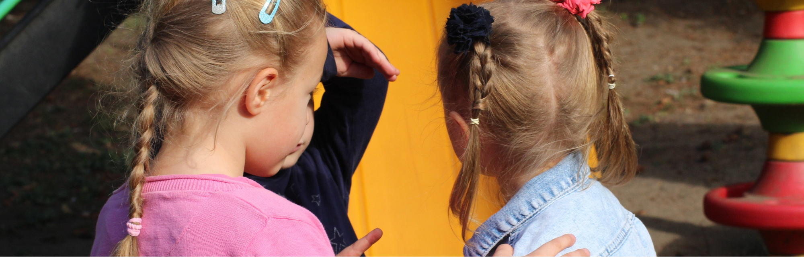

4 Sekunden beim Schuhe anziehen verraten mehr über Sprachentwicklung als jeder Test. Denn in einer Testsituation ist ein Kind angespannt, will alles "richtig" machen, und zeigt oft weniger, als es eigentlich kann. Im Alltag, ganz nebenbei, zeigt sich die wahre Sprachentwicklung. Dieser Artikel zeigt dir, worauf du wirklich achten kannst, und wann ein zweiter Blick sinnvoll ist.
mehr sagen als ein Test
am meisten tut
Zunahme statt Vergleich
Warum der Vergleich mit anderen Kindern in die Irre führt
"Ist das noch normal?" Diese Frage bekommt früher oder später fast jede Fachkraft von Eltern gestellt, meistens dann, wenn das eigene Kind mit zwei Jahren erst zehn Wörter spricht, während das Nachbarskind schon in kurzen Sätzen redet.
Die ehrliche Antwort: Sprachentwicklung verläuft bei jedem Kind unterschiedlich schnell, und der Vergleich mit anderen Kindern sagt wenig aus. Aussagekräftiger ist die eigene Entwicklung über die Zeit. Nimmt der Wortschatz von Monat zu Monat zu? Versteht das Kind mehr, als es selbst sagen kann? Das sind die Signale, auf die es wirklich ankommt.
Die 4 Alltagsmomente, die mehr sagen als ein Test
Du musst dafür keine Testsituation schaffen. Diese 4 Momente passieren ohnehin jeden Tag, du musst nur genauer hinschauen.
Reim-Spiele im Alltag
Beim Anziehen, Aufräumen, Warten aufs Essen: Reime dazu ("Schuh – Kuh", "Ball – Fall"). Wer Reime erkennt und selbst bildet, hat meist auch ein gutes Sprachverständnis.
Dinge benennen UND beschreiben
Nicht nur "Das ist ein Apfel", sondern "Der Apfel ist rot und rund, er fühlt sich glatt an." Achte darauf: Nutzt das Kind schon Adjektive oder bleibt es bei Einzelwörtern?
Sprachvorbild statt Korrektur
Sagt ein Kind "Ich bin gerennt", wiederhole ruhig "Ja, du bist gerannt!", ohne "Nein, das heißt...". So lernt das Kind die richtige Form, ohne sich für Fehler zu schämen.
Offene Fragen beim Bilderbuch
Statt "Ist der Bär braun?" (Ja/Nein) frag lieber "Was macht der Bär gerade?" Offene Fragen bringen Kinder dazu, ganze Sätze zu bilden, und zeigen dir sofort, wo ein Kind sprachlich steht.

Sprachentwicklung nach Alter im Überblick
Diese Übersicht ersetzt keine fachliche Einschätzung, gibt dir aber eine grobe Orientierung, was in welchem Alter etwa zu erwarten ist.
| Alter | Was du etwa erwarten kannst | Worauf du achten kannst |
|---|---|---|
| ca. 12 Monate | Erste bewusste Wörter wie "Mama", "Papa", "da" | Reagiert das Kind auf seinen Namen und einfache Aufforderungen? |
| ca. 18 Monate | Etwa 10–50 Wörter, erste Ein-Wort-Äußerungen für ganze Wünsche | Wächst der Wortschatz von Monat zu Monat sichtbar? |
| ca. 2 Jahre | Etwa 50–200 Wörter, erste Zwei-Wort-Sätze ("Ball haben") | Verbindet das Kind zwei Wörter zu einer kleinen Aussage? |
| ca. 3 Jahre | Einfache Sätze mit 3–4 Wörtern, erste W-Fragen | Stellt das Kind selbst Fragen wie "Was ist das?" |
| ca. 4 Jahre | Komplexere Sätze, versteht kurze Geschichten | Wird das Kind auch von fremden Erwachsenen gut verstanden? |
Faustregel zur groben Orientierung, keine Diagnose. Jedes Kind entwickelt sich in seinem eigenen Tempo.
Beobachtungs-Checkliste zum Ausdrucken
Die 4 Alltagsmomente aus diesem Artikel als A4-Checkliste für den Gruppenraum oder das nächste Elterngespräch, kostenlos zum Herunterladen.
Wann ein Blick zur Logopädie sinnvoll ist
Manchmal reicht aufmerksames Beobachten nicht aus, und das ist völlig in Ordnung. Als grobe Faustregel gilt: Wenn ein Kind mit 2 Jahren weniger als 50 Wörter spricht, mit 3 Jahren noch keine Zwei-Wort-Sätze bildet, oder von fremden Personen kaum verstanden wird, lohnt sich ein Gespräch mit den Eltern über eine logopädische Abklärung.
Wichtig dabei: Das ist kein Grund zur Sorge, sondern eine Einladung, frühzeitig hinzuschauen. Sprich das Thema in einem ruhigen, wertschätzenden Rahmen an, nicht zwischen Tür und Angel.
Fazit: Hinschauen statt vergleichen
Was am Ende zählt
Sprachentwicklung lässt sich nicht in einer einzelnen Testsituation erfassen. Sie zeigt sich in den kleinen Momenten des Alltags, beim Anziehen, beim Vorlesen, beim Spielen. Wer regelmäßig genau hinschaut, erkennt Entwicklungsschritte und mögliche Auffälligkeiten oft früher als jeder standardisierte Test.
Du willst dein Wissen rund um Sprachförderung und Elterngespräche vertiefen? EDULEO unterstützt dich mit zwei passenden Formaten:
Tagesfortbildung: Sprache erforschen und gestalten mit „Wuppi"
Literacy, phonologisches Bewusstsein und konkrete Sprachförderung für den Kita-Alltag, in Kooperation mit dem Finken Verlag.
Zur Tagesfortbildung →Tagesfortbildung: Elterngespräche führen
Sicheres Auftreten und praxisnahe Gesprächsstrukturen, auch für sensible Themen wie die Sprachentwicklung.
Zur Tagesfortbildung →Für mehr Impulse aus dem Kita-Alltag findest du EDULEO auch auf Instagram. @eduleo_akademie folgen